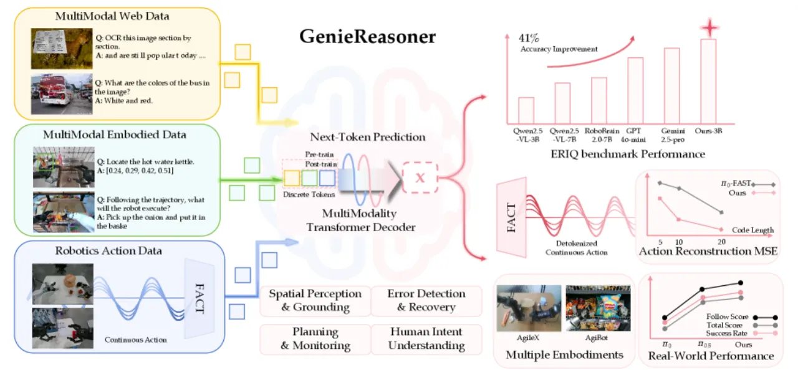
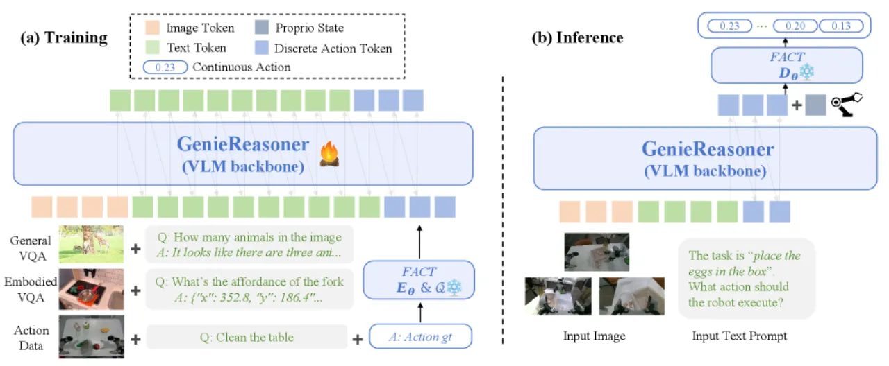
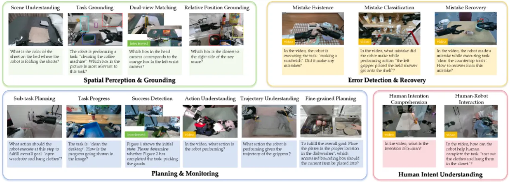
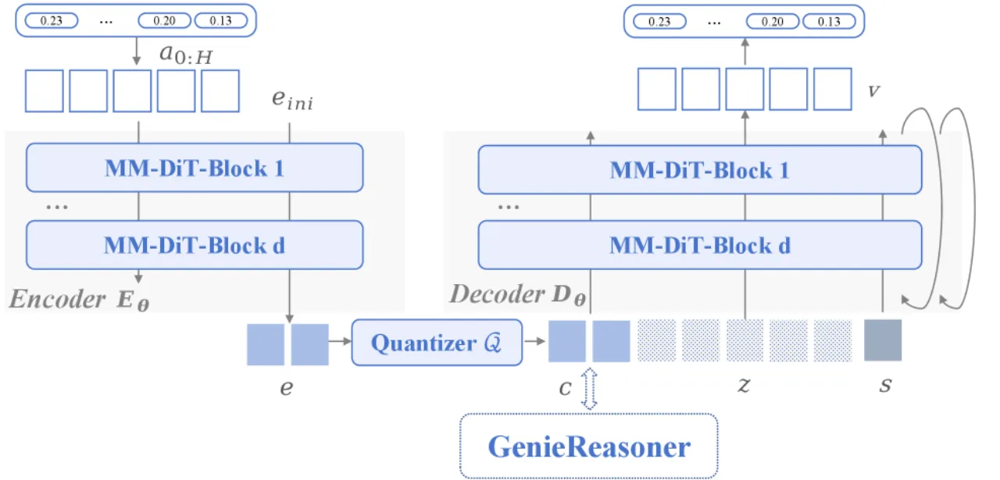
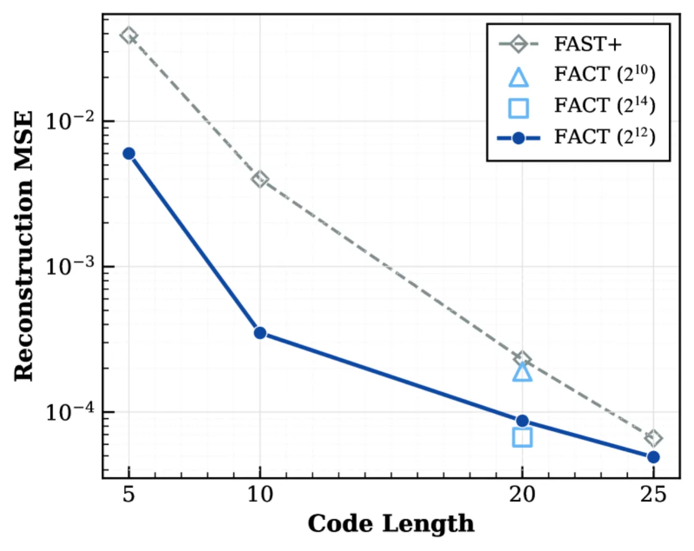
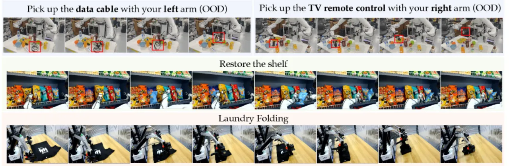

现有 VLA 模型在推理泛化与高精度动作执行之间存在根本性矛盾。本文提出两个互补贡献： ERIQ（6,052 条具身推理问答，覆盖四个推理维度）用于系统量化该瓶颈， FACT（基于 flow matching 的动作分词器）将连续动作离散化同时保留高保真轨迹重建能力。 整合后的 GenieReasoner 在真实机器人任务中超越连续与离散动作基线。
通用机器人需要在开放世界环境中同时做到广泛泛化与高精度动作执行——这一组合对现有 Vision-Language-Action（VLA）模型而言仍是重大挑战。
"models optimized for strong reasoning capabilities tend to exhibit reduced action precision, while those achieving high-fidelity execution often demonstrate limited generalization."
具体而言，现有方案存在三层缺陷：
为定量解耦这一瓶颈，作者构建了 ERIQ（Embodied Reasoning Intelligence Quotient）—— 一个包含 6,052 条具身问答对的大规模基准，跨四个推理维度评测 VLM， 并证明具身推理能力与端到端 VLA 泛化性能之间存在显著正相关。

本文提出三个互补模块：ERIQ（评估框架）、FACT（动作分词器） 与 GenieReasoner（统一模型），共同构成从诊断到执行的完整框架。

ERIQ 包含 6,052 条标准化多选问答对，覆盖四个具身推理维度， 共 15 个细粒度子任务：
通过将推理与运动执行解耦，ERIQ 能够系统性评测 VLM 的具身推理短板， 并揭示推理能力与端到端 VLA 泛化之间的强正相关关系。

FACT（Flow-matching-based Action tokenizer for Control Tasks）结合 VQ-VAE 离散化与 flow matching 解码， 实现连续动作的无损压缩与高保真还原：
e = ℰ_θ(a_{0:H}, e_{ini})，在时间维度（L≤H）和空间维度（D≤S）进行压缩。
比特量化器通过 c = sign(e) 将连续嵌入转换为二值离散码。
a^(t) = (1−t)z + ta, t ∈ [0,1]，通过 ODE 积分重建平滑轨迹。
MSE of (a−z) − 𝒟_θ(a^(t), c, t)。

GenieReasoner 将 VLM 主干（3B 参数规模）与 FACT 分词器统一训练。 训练阶段，VLM 在多模态数据上同时优化推理目标与离散动作预测目标； 推理阶段，模型自回归地预测离散码序列，FACT 解码器实时还原为连续控制信号， 避免了连续头与推理目标之间的优化冲突。
训练数据来源涵盖：
实验分三部分：ERIQ 基准评测、FACT 轨迹重建对比、以及真实机器人任务验证。 基线包括连续动作模型 π₀、π₀.₅、GR00T 以及离散动作模型 π₀-FAST。
GenieReasoner-3B 在 ERIQ 上取得 82.72% 平均准确率， 远超 Qwen2.5-VL-3B 基线的 58.64%，提升约 41%。 各维度详细结果如下：
| ERIQ 子任务 | 维度 | Qwen2.5-VL-3B（基线） | GenieReasoner-3B |
|---|---|---|---|
| Scene Understanding | 空间感知 | — | 84.18% |
| Dualview | 空间感知 | — | 68.54% |
| Task Grounding | 空间感知 | — | 93.21% |
| Relative Position | 空间感知 | — | 77.51% |
| Action Understanding | 规划与监控 | — | 96.67% |
| Success Detection | 规划与监控 | — | 85.25% |
| Subtask Planning | 规划与监控 | — | 90.50% |
| Fine-grained Planning | 规划与监控 | — | 55.36% |
| Trajectory | 规划与监控 | — | 73.86% |
| Progress | 规划与监控 | — | 51.60% |
| Mistake Existence | 错误检测 | — | 75.45% |
| Error Classification | 错误检测 | — | 93.10% |
| Recovery Strategy | 错误检测 | — | 85.71% |
| Intention Comprehension | 意图理解 | — | 96.44% |
| Human Interaction | 意图理解 | — | 83.26% |
| ERIQ 总体平均 | — | 58.64% | 82.72% |

在真实机器人评测中，GenieReasoner 在以下五个复杂度设置下的语言跟随（language following）指标 与完整任务成功率（full task success rate，含抓取与物体操作）两项指标上均优于所有基线（π₀、π₀.₅、GR00T、π₀-FAST）， 并在综合加权性能上取得最高分。

作者通过消融实验验证了两个核心设计选择：
作者明确指出，未来工作将探索 "deeper synergies between Chain-of-Thought reasoning and action generation"。 当前 GenieReasoner 将推理与动作在同一序列空间中预测，但二者的交互机制（例如推理步骤如何动态调整动作码） 尚未深入研究。
作者计划 "further enhance the system's generalization and instruction-following robustness across diverse real-world environments"，隐含当前模型在分布外场景（极端光照、新型物体、 非结构化指令）下仍存在鲁棒性不足的问题。
GenieReasoner 的训练数据包含 AgiBot World 平台的专有轨迹数据、定位标注等， 这些数据未公开，限制了社区复现与公平对比。ERIQ 基准的构建过程同样依赖内部数据源， 外部研究者难以直接扩展。
图7 展示了不同码长下的重建 MSE 对比，但论文未提供端到端任务成功率随码长变化的系统分析， 实践中最优码长选择仍依赖经验调参，缺乏理论指导。